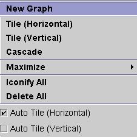
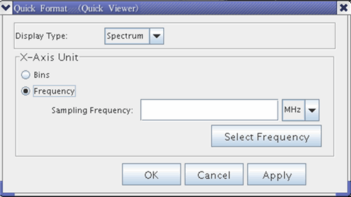
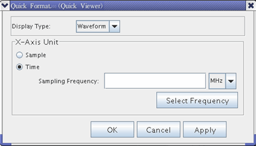

Data Display Panel Shortcut Menus
To access the display panel pop-up menus, right-click outside of a Data Display Panel but within the Waveform Graphs Tool (WGT).
The functionalities of the menu items are the same as those accessible from the Menu Bar.

New Graph - Opens a new graph in the WGT.
Tile (Horizontal) - Aligns graphs currently displayed in the WGT horizontally.
Tile (Vertically) - Aligns graphs currently displayed in the WGT vertically.
Cascade - Aligns graphs currently displayed in the WGT in a cascading manner.
Maximize - Maximizes the selected graph in the WGT.
Iconify All - Minimizes graphs currently displayed in the WGT.
Delete All - Deletes graphs currently displayed in the WGT.
Auto Tile (Horizontal) - Automatically aligns graphs in the WGT horizontally.
Auto Tile (Vertical) - Automatically aligns graphs in the WGT vertically.
Right-clicking a graph opens a shortcut menu with the following groups of menus.
Display
Highlight the Display menu. Five sub-menu items appear:
- Auto Scale: Scales the waveforms in the Data Display Panel for best fit using set default values.
- Clear: Deletes selected waveform from the Data Display Panel. If no waveform is selected, all traces are deleted.
- Copy: Copies a waveform selected in the Data Display Panel to an internal buffer.
- Paste: Pastes the copied waveform (from the internal buffer) into the Data Display Panel.
- Edit Trace: Allows you to edit the ASCII data of the selected waveform using the default editor (vi). You can use a different editor such as NEdit. A prerequisite to this is that the environment variable EDITOR is set, as in the following example:
export EDITOR=/usr/X11R6/bin/nedit
In this example, the Trace Editor is set to the NEdit tool. You must restart SmarTest in order that this EDITOR variable takes effect.
Analysis
Highlight the Analysis menu. Seven sub-menu items appear:
- Signal Information: Shows the values for the mean, standard deviation, min/max, and the sampling points making up the selected waveform.
- Spectrum Analysis: Shows the values for signal-to-noise ratio plus distortion (SND), signal-to-noise ratio (SNR) and total harmonic distortion (THD) related to the selected waveform.
- Spectrum analysis: Applies FFT analysis to the selected waveform.
- Complex Spectrum Analysis: Shows I and Q data related to the selected waveform.
- Resample Waveform: Shows the resample rate applied to the selected waveform.
- Jitter Analysis: Shows jitter on the selected waveform.
- Diff. Waveform: Shows the sum and the difference between the selected waveforms and displays this information in the Data Display Panel.
- Show Histogram: Shows a histogram of the selected waveform and displays in a new Data Display Panel.
Hardware
Highlight the Hardware menu. One sub-menu item appears:
- View waveform memory: Displays a waveform read out of the waveform memory of the specified analog module.
Math
- DDC: Digital downconversion
- Decimate: reduce the number of samples in a discrete-time signal by extracting some of the samples from the whole signal.
- (De-)Logarithmize: Convert a waveform to its logarithmic output mode or vise versa. It
includes four functions,
10*log10(x)for POWER to DB,20*log10(x)for VOLT to DB,exp10(x/10)for DB to power andexp10(x/20)for DB to VOLT.
Format
Right-click the format menu. Two sub-menu items appear:
- Quick Format
- Detailed Format
Quick Format
Selecting the item "Quick Format" opens a dialog box which allows the following display types:
- Spectrum
- Waveform
When Frequency or Time is selected as X-Axis unit, the Select Frequency button is enabled.


It allows you to select the configured sampling frequency of the specified analog set and the specified digitizer pin.
Signals formatted with Quick Format are always displayed using the maximum screen size.
You can now select the display format for the uploaded signal. To complete your selection click "Apply" and "OK".
- If the selected display type is "Waveform" and you choose "Sample" for the X-axis, then the Y-axis shows "Amplitude".
- If the selected display type is "Waveform" and you choose "Time" for the X-axis, then the Y-axis shows "Amplitude", see below. The X-axis units (ms, us, ns or ps) are automatically selected according to the chosen sampling frequency. The X-axis range extends from 0 s to n/fs, where n is the number of samples and fs is the sampling frequency.
- If the selected display type is "Spectrum" and you choose "Bins" for the X-axis, the Y-axis shows "Power", see below. The X-axis units are "frequency[Bins]" showing the harmonics of the uploaded signal.
- If the selected display type is "Spectrum" and you choose "Frequency" for the X-axis, the Y-axis shows "Power", see below. The X-axis units are MHz.
Detailed Format
For information on detailed format refer to Format Dialog Box.
Functional changes
- Introduced before SmarTest 6.3.2
- SmarTest 7.0.3: New button in Quick Format diaLog to select frequency for specified analog set and digitizer pin
- SmarTest 7.0.3: New shortcut menu to convert a waveform to logarithmic output mode